Fighting Core FUD
We need a Conrtib Champion
Who is This Person?
Tess Flynn
Module Co-maintainer For
Flag
Flag Friend
Examples
Drupal Developer with
(We're hiring!)
What is Example Module?
The Most Useful, Useless Module Ever
Provides real, functional modules
...that should never be used on a real site
Code Examples For Drupal Developers
The Examples for Developers project aims to provide high-quality, well-documented API examples for a broad range of Drupal's core functionality.
Core APIs Only

For New and Old Drupal Devs
Help for writing modules
Example code for new/updated APIs

Why Example Code?

Isn't Core Code Enough?
Source code is a medium
While the target is execution...
...how it's written is important!

Learning from Core Code is Confusing
Modules not isolated from each other
Comments for information, not for instruction

Example Code Provides Context and Connection
While providing functional modules
How is Example Module Developed?
Like Many Other Modules!
Volunteer-driven
Features requested by the community
Core vs. Examples Commits

But What Really Happened?

What Does that Mean for Examples?

Examples is Special
Bootstraps many contrib modules
Signals to contrib devs core is ready
So What's the Problem?
Drupal 8 Changed the Rules
Significantly Longer Dev Cycle

Significantly Different Code
Significantly Different Code
Significantly Different Code
Knowledge Silos -- Drupal 7.x
Knowledge Silos -- Drupal 8.x

Knowledge Silos -- Drupal 8.x

The Shadow of Doubt Hangs Over all Drupal APIs
The Shadow of Doubt Hangs Over all Drupal APIs


Issue #1532612
Why Examples in Core
Development Strongly Tied to Core
In a way that isn't true for other contrib modules
In a Perfect World...

In a Perfect World...
In a Perfect World...

In a Perfect World...

In a Perfect World...

Contrib has Limited Visibility
Examples module is...all but impossible to find unless you're already "in" with the community.
‐ Angela "webchick" Byron


We've Got to Make That Shorter


Examples Provides Tests for Core
Example modules could be used by core tests as "Mock modules", so fewer of those mock modules would be required.
‐Randy Fay (rfay)


Bugs are the Tip of the Iceberg
Bugs are the Tip of the Iceberg
Bugs are the Tip of the Iceberg

Bugs are the Tip of the Iceberg
Solves Maintainership Issues
Examples Helps People Learn Core

Examples Helps People Learn Core
Examples Helps People Learn Core
Examples Helps People Learn Core
Examples Helps People Learn Core
Examples Helps People Learn Core

Isolated Modules Mean Easy Debugging
Well commented code lowers barrier to contributing
Sounds Great, Right?
Except...
Example Module isn't Core
In Core, Examples Wouldn't be Isolated
Ruins key advantage of Example code
Motive and Purpose Mismatch
Examples' goal is to support contrib devs
...not be core's test case
"If anything lacks tests, then we need better test coverage, not examples."
‐ Daniel F. Kudwien (sun)
Core Tests are Weird
Test cases have to account for mal-use, abuse, & pure stupidity
Tests complicated enough without Example code overhead
Writing Example Code is a Skill
More than just adding lots of comments
Different considerations compared to "production" code
Maintaining Examples while Developing new APIs is Painful
All the agony of updating Examples...
...and core at the same time!
Everyone's Pointing Fingers
No one is fixing the problem.
Examples isn't Core or Contrib
We Need a Third Option
Examples Provides Checks and Balances Against Core
Examples Provides Checks and Balances Against Core

Examples Provides Checks and Balances Against Core
Examples Provides Checks and Balances Against Core

Examples Provides Checks and Balances Against Core
Examples Provides Checks and Balances Against Core
In-Core Examples Would Have a Weird Dev Cycle
In-Core Examples Would Have a Weird Dev Cycle
In-Core Examples Would Have a Weird Dev Cycle
In-Core Examples Would Have a Weird Dev Cycle
In-Core Examples Would Have a Weird Dev Cycle
In-Core Examples Would Have a Weird Dev Cycle
In-Core Examples Would Have a Weird Dev Cycle
But That's Unprecedented!
...Right?
Nope.
https://groups.drupal.org/node/436203
Where Should Examples Live in Core?
So developers can easily find it...
...while keeping it hidden from users?
/modules/examples
The natural place
Delete on install or special exception to hide in admin > extend
/core/modules/examples
Where all core modules go
Examples not really a core module, less discoverability
/core/examples
Keeps it in /core, but not "in core"
Hidden for users, more discoverable for developers
/examples
Can't miss it there
Must be moved or copied to enable
Semantic Versioning Means
Core is Fast(er)
But fast enough for Examples?
New Examples Every Six Months
We're Trying to Solve The Wrong Problem
The problem is people.
Breaking the Stalemate
Breaking the Stalemate
Breaking the Stalemate
Breaking the Stalemate
The Contrib Champion
Based on the "Cloud Champion"
Proven way to roll out large, intimidating changes in an enterprise
What's Their Goal?
Support contrib developers through documentation, mediation, sample code, education, and public outreach in order to ensure a successful deployment of a new major version of Drupal core.
...And that Means?
...And that Means?
...And that Means?
...And that Means?
Raising Excitement
The first, Most Obvious Role
Provide a consistent avenue for information and discussion
Support "Front Line" Modules
Assist with crowdfunding, awareness, knowledge transfer
Mediation
Mediation
Mediation
Mediation
Mediation
Mediation
Mediation
Mediation
Mediation
Mediation Provides a Back Channel
So that issues will be heard...
...while reducing foot work for devs.
Mitigating "Change Shock"
The worst thing that can happen...
...is what happened.
Fear, Uncertainty, Doubt
Are inevitable when changes are huge
And easily created unintentionally
That Messaging Thing
That Messaging Thing
That Messaging Thing
That Messaging Thing
FUD Needs to be Constantly,
Carefully Managed
Because if no one does it...
...it only confirms people's unspoken fears.
Education
Education
Education
Education
Examples Is Only One Avenue
Blog posts, documentation, videos, organizing sprints
Not Just a Champion, but an Initiative
Multiple team members, multiple companies
Community Liaisons, Project Managers, Mentors
Summary
Examples has a Special Role
On-boards new developers
Kickstarts module updates
Signals core is ready for new modules
Both Sides are Right
Examples is special to the community
But core inclusion isn't a good fit
The Problem isn't Code
It's that people's needs aren't being met
There's no easy way to meet that without change
We Need a Contrib Champion
Mediates concerns about core
Supports documentation and examples
Boosts key "front line" modules
The Contrib Champion is a Social Solution
To the social problems of implementing change in a technical context
Let's Not Point Fingers

Let's Make Contrib Happy
For All of Us
Come Sprint with Us!
Learn and contribute to Drupal Core
Mentors will help you setup and find issues
Friday 9am - 6pm, Room 403AB
Thank you!
@socketwench
http://socketwench.github.io/exampleModuleAintCore